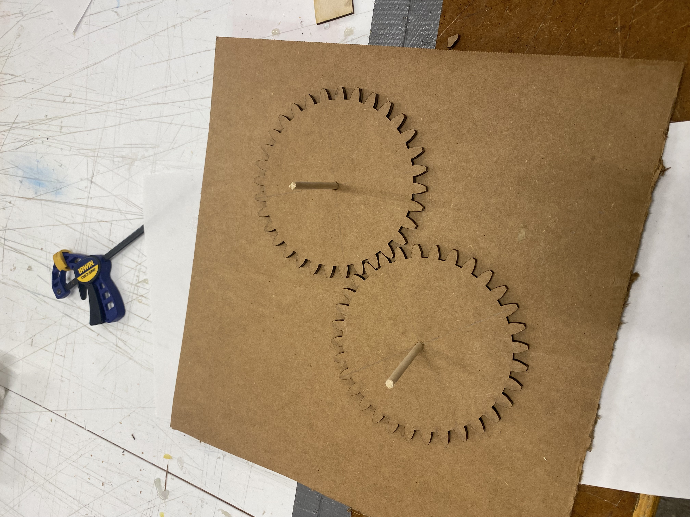
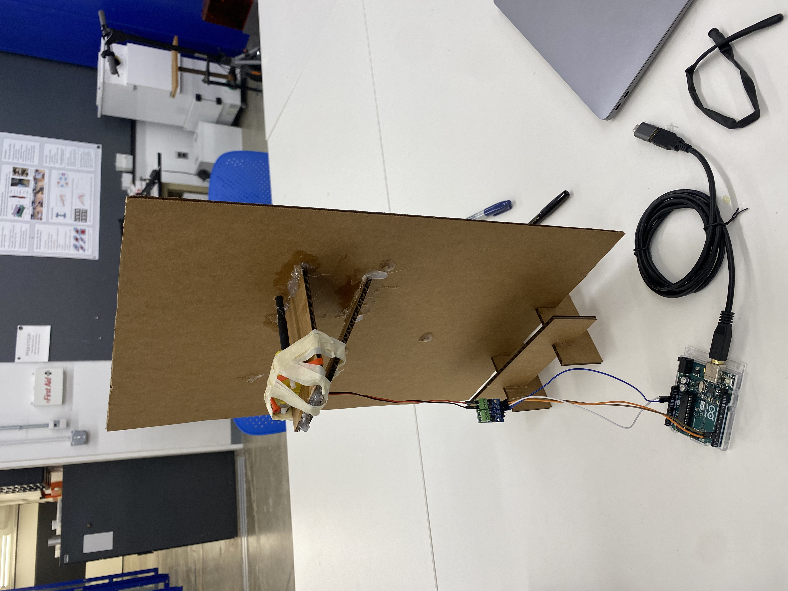

<h1 style= "text-align: center;">
Week 3: Hand Tools and Fabrication </b></h1>
This weeks assignment consisted of (1) creating a kinetic sculpture and including circuitry to move your sculpture and (2) controlling the sculpture with a circuit on a breadboard and using a multimeter to measure the voltages in your circuit.
<h2 style= "text-align: center;">
Part 1: Learning How To Gear </b></h2>
For this week's assignment, I didn't have a clear idea of what I wanted to build so I started out by learning how to build gears on Fusion360. I watched a few YouTube videos on how to build gears from scratch but it was very difficult. I soon discovered GF Gear Generator and installed it onto my Fusion360, this made making gears a lot easier!
Here is a picture of my gears on Fusion360. I printed two of these out on the laser cutter and put them together to see if they'd fit nicely and turn.
Here are the measurements that I used for my gears:
Module: 2.00mm
Number of teeth: 16 & 32 (the gears with 8 teeth were too small)
Pressure angle: 20 degrees
<div class="image-container" style="margin-bottom: 20px; ; text-align: center;">
</div>
After printing and putting them together, it turns out they turned together very smoothly so I didn't have to adjust any details on the gears! For the first two gears that I printed, I didn't cut holes into them. So after finding that they turned smoothly together, I put holes in my gears on Fusion360 and printed out the rest of the gears that I needed for my project.
<h2 style= "text-align: center;">
Part 2: Assembly </b></h2>
My project idea was inspired by Kassia's Dancers. The vision is butterflies in flight. I wanted to create a standing up board with gears on it that each have (wire) butterflies attached to them. The idea is that as the gears turn, the butterflies on them will move and look like they're "flying".
<div class="image-text-container" style="margin-bottom: 20px;">

<p> The first two gears that I printed! I hot glued the sticks onto the cardboard and then slipped the gears on. </p>
</div>
Here's a gif of the base gears that are going to be apart of my project. I've attached the gears to the cardboard base with a hot glue gun through the back.
<img src="spin1.gif" width="400" height="600">
<h2 style= "text-align: center;">
Part 3: Final Touches </b></h2>
After making sure that my gears turned smoothly, I started (1) making a bottom stand so it could stand up (2) putting a platform on the back to hold my motor and (3) placing my wire butterflies on it. I used Fusion360 to cut out 4 pieces that would fit together to make a stand for my board. A picture of my board with the stand is attached below. After this, I used the laser cutter to cut out two pieces of cardboard that I fashioned into a stand for my motor. This part took a lot of hot gluing with cement glue on top to insure maximum hold. Lastly, I used hot glue to place some butterflies on my board! I cut out smaller gear pieces to put on top of my wooden sticks so that some of the butterflies could remain stationary while the others turned. The three images below depict the three steps I mentioned above.
<div class="image-container" style="margin-bottom: 20px; ; text-align: center;">

<img src="board.jpeg" alt="Image 3" width="300" height="375">
</div>
Finally, it was time to see if my gears moved with the motor turned on! My motor was already connected to the breadboard from class so I used Arduino to control the speed and direction of the gears. Below is a gif of my turning butterfly board!
<img src="spin2.gif" width="400" height="600">